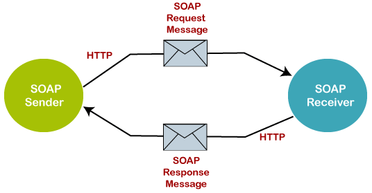
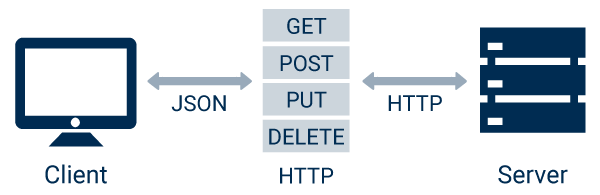
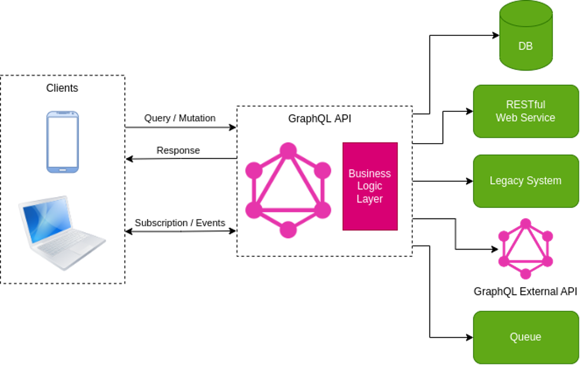

Introducción
Un servicio web es un sistema de software diseñado para soportar la comunicación interoperable máquina a máquina a través de una red. Es una tecnología que permite que aplicaciones muy dispares, posiblemente escritas en diferentes lenguajes de programación y ejecutándose en distintas plataformas, puedan intercambiar datos y lógica de negocio de una manera estandarizada.
Imaginemos un ecosistema digital complejo: una tienda online necesita procesar un pago, consultar el stock en un almacén, calcular el coste del envío y notificar al cliente. Cada una de estas operaciones puede ser gestionada por un sistema diferente. El servicio web actúa como el "pegamento" universal, proporcionando un lenguaje y un conjunto de reglas comunes (protocolos) para que el sistema de la tienda pueda "hablar" con el sistema bancario, el sistema del almacén y el sistema de la empresa de logística sin necesidad de conocer los detalles íntimos de su implementación.
La clave de su éxito reside en el uso de estándares abiertos. Tecnologías como HTTP, XML y JSON, que son los pilares de la web, se utilizan como base para la comunicación, garantizando una compatibilidad casi universal.
Evolución Histórica
La idea de que diferentes sistemas se comuniquen entre sí a través de una red es tan antigua como la propia computación en red. Sin embargo, fueron los servicios web los que popularizaron y estandarizaron esta comunicación, haciéndola accesible y escalable. A lo largo de las últimas décadas, este concepto ha evolucionado a través de varios modelos clave que sentaron las bases de las arquitecturas de software modernas.
Los primeros intentos de comunicación remota se basaron en el concepto de RPC (Remote Procedure Call). El objetivo era hacer que una llamada a una función en una máquina remota fuera tan transparente y sencilla como una llamada a una función local. Aunque revolucionarios para su época, estos sistemas a menudo tenían la limitación de estar fuertemente ligados a un lenguaje de programación o a una plataforma tecnológica específicos, lo que dificultaba la interoperabilidad entre diferentes sistemas.

A medida que internet maduraba, surgió la necesidad de protocolos que no estuvieran atados a un único ecosistema tecnológico. A finales de los años 90, XML-RPC emergió como una solución simple y efectiva, utilizando HTTP como canal de transporte y XML para codificar las llamadas a los procedimientos. Este protocolo allanó el camino para SOAP (Simple Object Access Protocol), un estándar mucho más robusto y formalizado que se convirtió en la base de los primeros servicios web empresariales. SOAP añadió una capa de complejidad y características avanzadas como seguridad, transaccionalidad y un lenguaje de descripción de servicios (WSDL), lo que lo hizo ideal para entornos corporativos con requisitos estrictos de estandarización.

Sin embargo, a principios de los años 2000, una alternativa más ligera y simple comenzó a ganar tracción. El estilo arquitectónico REST (Representational State Transfer), definido por Roy Fielding, propuso un enfoque radicalmente diferente. En lugar de centrarse en las "acciones" o procedimientos remotos (como SOAP), REST se enfoca en los "recursos" y en cómo manipular su estado utilizando los verbos estándar del protocolo HTTP. Con verbos como GET para obtener un recurso, POST para crearlo, PUT para actualizarlo y DELETE para eliminarlo, REST aprovechaba de forma directa los principios de la web. Su simplicidad, eficiencia y el hecho de que se basara en tecnologías web ya existentes dispararon su popularidad, consolidándose rápidamente como el estándar de facto para la creación de APIs web modernas.

A pesar de la popularidad de REST, con el tiempo surgieron limitaciones en escenarios de desarrollo modernos, especialmente en aplicaciones móviles y de front-end que necesitaban una alta eficiencia y flexibilidad. En este contexto, GraphQL emergió como un lenguaje de consulta para APIs, desarrollado inicialmente por Facebook para solucionar problemas de sobrecarga y falta de flexibilidad. En lugar de que el servidor dicte la estructura de los datos que se devuelven, GraphQL le da el poder al cliente para solicitar exactamente los datos que necesita, y nada más.
Arquitectura Orientada a Servicios (SOA)
Los servicios web son la implementación tecnológica de un concepto de diseño más amplio: la Arquitectura Orientada a Servicios (SOA). SOA no es una tecnología, sino una filosofía o un paradigma para diseñar y construir sistemas de software.
En una SOA, la lógica de negocio se descompone en un conjunto de servicios modulares y reutilizables. En lugar de construir una única aplicación monolítica gigante, se construye un ecosistema de servicios más pequeños que colaboran entre sí.
Principios Fundamentales de SOA
Una verdadera arquitectura orientada a servicios se adhiere a una serie de principios clave que garantizan su robustez y flexibilidad. El pilar fundamental es el Contrato de Servicio Estandarizado, que dicta que cada servicio debe exponer una descripción formal de sus capacidades, independientemente de la tecnología con la que esté implementado. Este contrato permite la abstracción, ocultando la lógica interna y asegurando que los consumidores del servicio no necesiten conocer sus detalles de implementación. El resultado directo de esta separación es el bajo acoplamiento (loose coupling), donde un cambio interno en un servicio no afecta a los clientes que lo consumen, siempre que se respete el contrato.
Siguiendo esta línea, los servicios se diseñan para fomentar la reutilización a lo largo de toda la organización; un único servicio de autenticación, por ejemplo, puede ser consumido por la aplicación web, la app móvil y herramientas internas. Para que esto sea posible, cada servicio debe gozar de autonomía, funcionando como una unidad independiente que gestiona su propia lógica y recursos. Esta autonomía se ve reforzada por el principio de no mantener estado (statelessness), que dicta que cada petición a un servicio debe ser autocontenida, sin depender de interacciones previas, lo que simplifica la escalabilidad.
Finalmente, en un ecosistema maduro, el principio de descubrimiento (discoverability) asegura que exista un registro centralizado donde los servicios puedan ser publicados y encontrados por otras aplicaciones, creando un entorno dinámico y adaptable.
Ámbito de Aplicación y Ventajas Clave
La adopción de una arquitectura orientada a servicios ofrece ventajas estratégicas que van más allá de la simple organización del código. Su principal fortaleza es la capacidad de lograr la integración de sistemas heterogéneos, permitiendo que aplicaciones dispares, construidas en diferentes tecnologías como Java, .NET o incluso sistemas heredados (legacy) en COBOL, puedan comunicarse e intercambiar información de forma fluida.
Esta capacidad es la base para la flexibilidad y la evolución tecnológica, ya que permite modernizar sistemas antiguos sin necesidad de reemplazarlos por completo; en su lugar, se construye una "fachada" de servicios web modernos que interactúa con el sistema legacy, facilitando una migración gradual y de bajo riesgo.
Esta misma separación de la lógica en servicios independientes habilita el desarrollo multiplataforma de manera muy eficiente. Una única lógica de negocio, expuesta a través de una API, puede dar servicio simultáneamente a múltiples tipos de clientes, como una página web desarrollada en React, una aplicación nativa para iOS y otra para Android. Además, esta arquitectura permite una escalabilidad granular.
A diferencia de un monolito, donde un cuello de botella en una pequeña función obliga a escalar toda la aplicación, en un sistema de servicios se pueden asignar recursos adicionales exclusivamente a aquellos servicios que experimentan una alta demanda, optimizando drásticamente los costes y el rendimiento.
Finalmente, al exponer estas funcionalidades a través de APIs, la arquitectura de servicios trasciende la optimización técnica para convertirse en un motor de innovación. Las empresas pueden permitir que desarrolladores externos construyan nuevas aplicaciones y modelos de negocio sobre su plataforma, como han demostrado gigantes como Google con sus mapas o Stripe con sus pasarelas de pago, creando un ecosistema de valor alrededor de sus servicios principales.